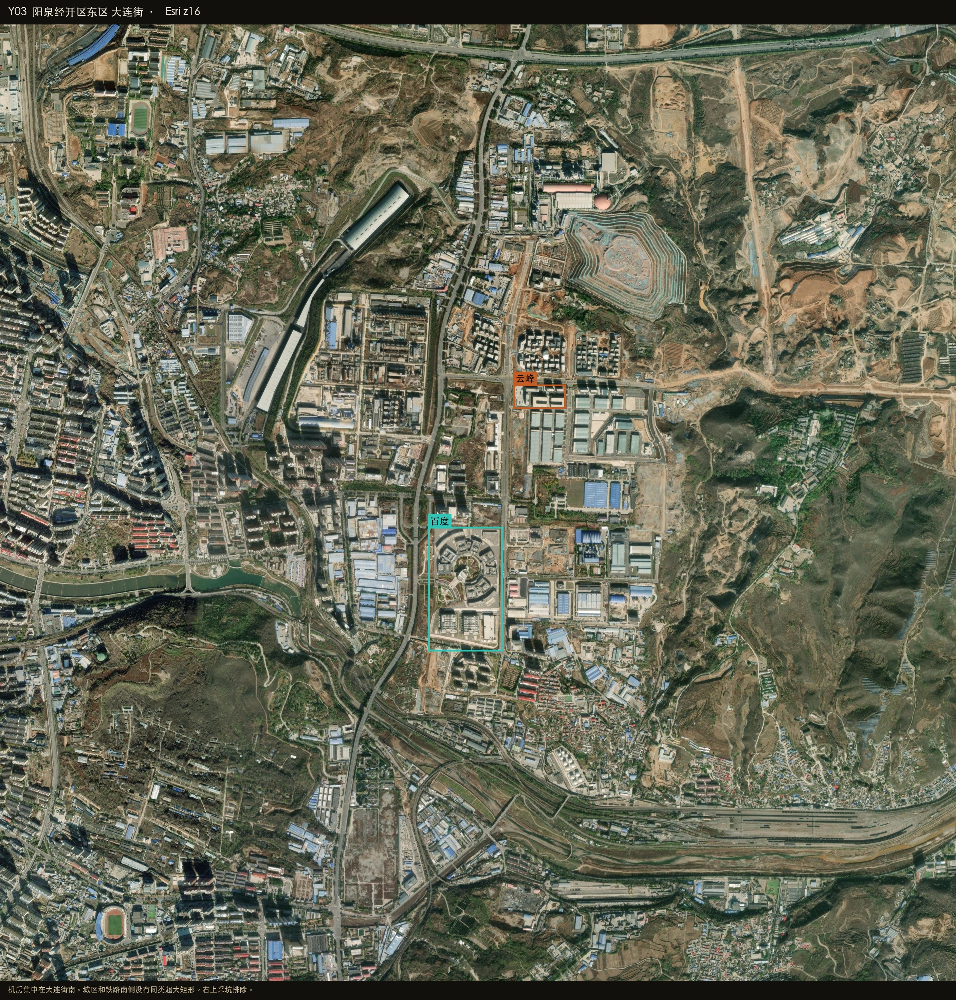
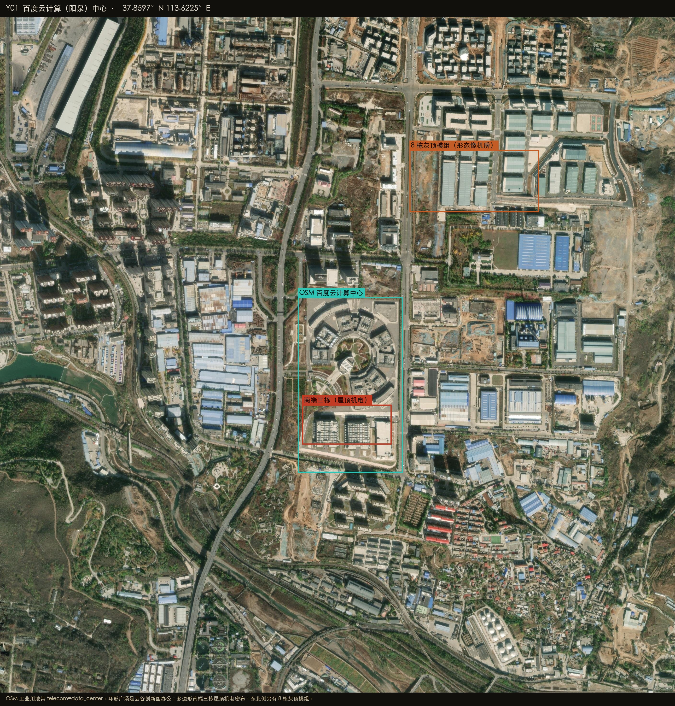
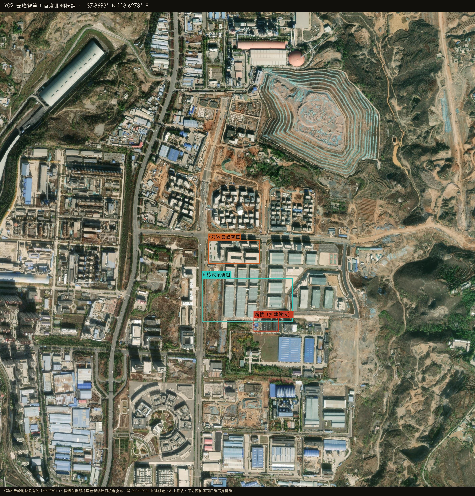

Datacenter Probe · 阳泉
37.8600°N 113.6230°E · r = 50 km
Esri World Imagery · 2026-08-27
Satellite reconnaissance · Shanxi
阳泉周边数据中心建设情况
五座城里阳泉的机房最少，也最集中。能指认的只有大连街这一块：OSM 百度多边形南端三栋屋顶机电密布的楼，东北侧约 8 栋灰顶模组，模组东边一栋屋顶机电密布的新楼。再往北是 OSM 标的云峰智算，地块很小。50 公里圈里没有第二条走廊。

HERO · 大连街 · 百度在南、云峰在北
在建 / 高置信机房
已投运 / OSM 具名
候选 / 业主待核
排除或不像机房
底图 Esri World Imagery（WGS84）
Y-BAIDU · 8 栋模组
OSM 带 telecom=data_center。多边形南端三栋 + 东北侧约 8 栋灰顶矩形是形态上的机房。
高置信 · 已投运
Y-YUNFENG · 北侧小地块
OSM 有名，地块约 140×290 m。2024–2025 报道装柜测试；模组东侧那栋新楼是扩建候选。
中高 · 部分建成
排除 · 采坑
右上采坑、模组南边两栋蓝顶厂房、铁路南普通厂房不算机房。
排除
50 km · 无第二走廊
城区、荫营、白泉方向未见同等超大矩形阵列。
未确认
37.8597°N 113.6225°E
百度云计算中心
经开区东区，大连街两侧。OSM 多边形罩住环形广场（云谷创新园办公），但多边形南端三栋屋顶机电密布的楼已经是机房形态；约 8 栋灰顶模组在多边形东北外侧。
高置信 · 已投运
- 公开报道 8 个高标准模组楼，和东北侧约 8 栋灰顶大厅对应
- 南端三栋屋顶机电密布，不是普通厂房
- 模组南边两栋蓝顶厂房不计
百度
在 Google 卫星图打开 ↗

PLATE Y01 · 百度 · 37.8597°N 113.6225°E
37.8693°N 113.6273°E
云峰智算
百度模组北侧、隔一条路。OSM 地块约 140×290 m，一栋主楼。报道 2024 年起建设、2025 装柜测试。
中高置信 · 部分建成
- 模组东侧一栋深色新楼屋顶机电密布，是云峰或百度扩建候选，本次无法分归属
- 右上采坑排除
云峰云山数据
在 Google 卫星图打开 ↗

PLATE Y02 · 云峰 · 北侧土建
怎么判，什么不算
阳泉不像乌兰察布或贵安那样铺开。50 km 圈里能指认的机房就这一块。
算作机房
- 并排灰顶大矩形
- 屋顶机电密布的方楼
- OSM telecom=data_center
明确排除
- 采坑
- 蓝顶厂房、铁路南侧普通厂房
- 环形广场办公（云谷）不要单独当机房
在 Google 卫星图打开圆心 ↗